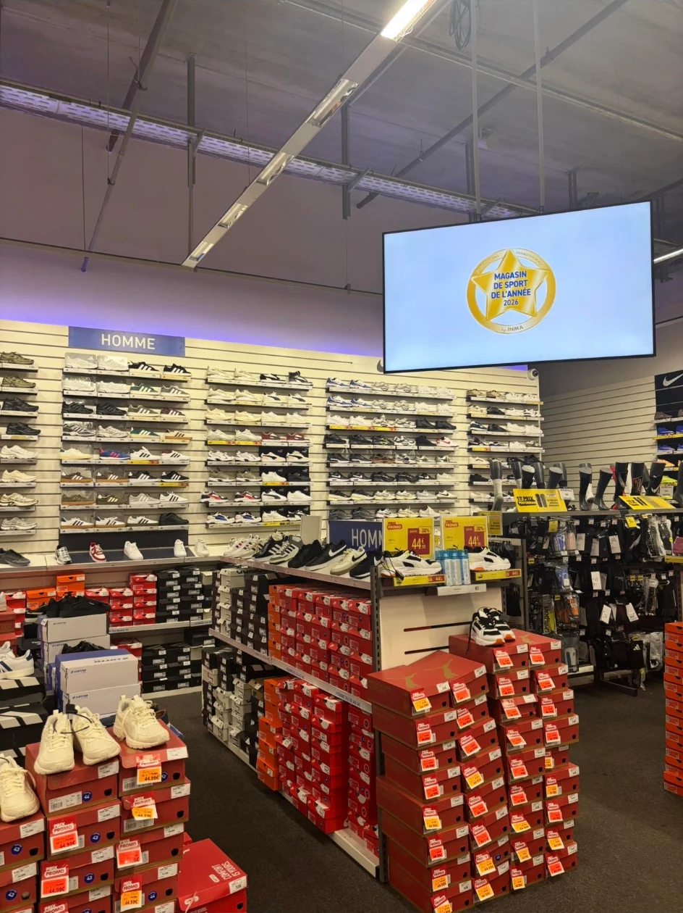
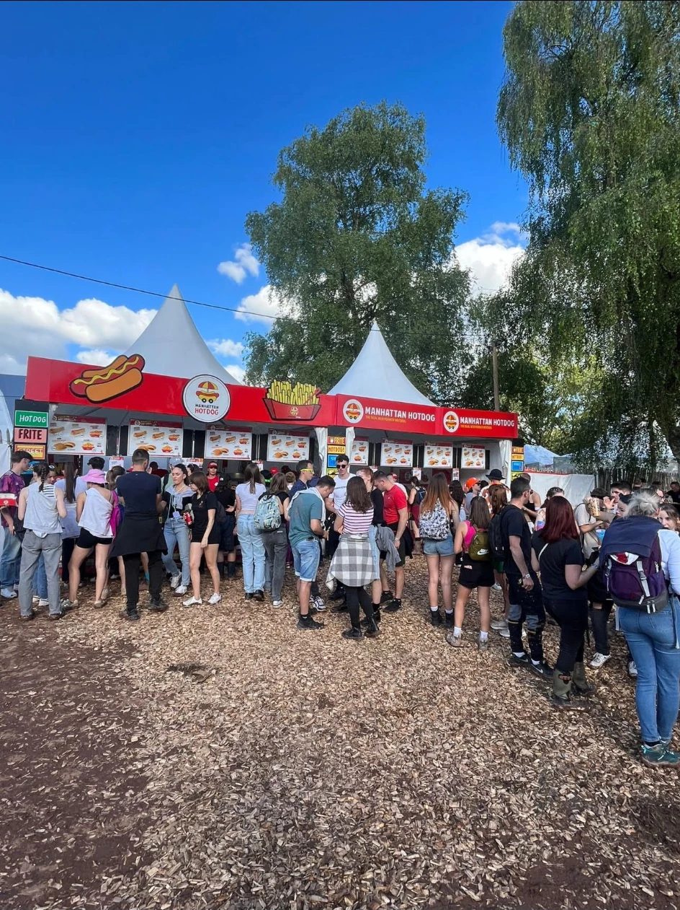
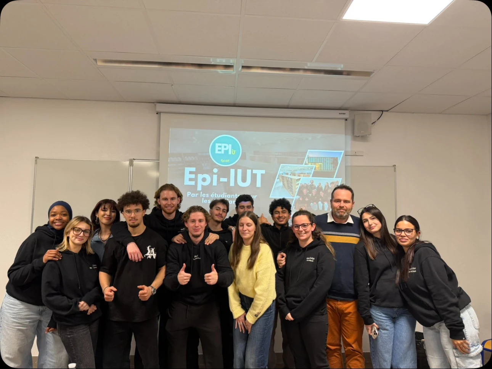

Intersport Marseille Grand Littoral
Portfolio · BUT Techniques de Commercialisation
Comprendre les clients.
Valoriser l’offre.
Développer la performance.
Je m’appelle Mathieu Padovano. Je construis mon expérience au croisement de la vente, du merchandising, du pilotage commercial et du management de proximité.
Mathieu PadovanoCommerce · Retail · Management
Mon approche
Une culture du terrain, enrichie par l’analyse. Observer les usages, structurer l’action et faire progresser l’expérience — côté client comme côté équipe.
Compétences
Quatre facettes d’un même métier.
Le portfolio réunit les compétences communes du BUT et les deux compétences spécifiques au parcours Marketing et Management du Point de Vente.
Expériences choisies
Des preuves, pas seulement des intentions.

Intersport · Printemps 2026
Réimplanter le running pour rendre l’offre visible dès l’entrée du rayon.

Événementiel
Vendre avec efficacité dans un environnement à très forte affluence.

Agoraé · Projet collectif
Transmettre des pratiques et faire vivre un lieu solidaire.
Parcours
Une progression construite au contact du réel.
Manhattan Hot Dog
Gestion de stand en événementiel
Vente, organisation opérationnelle, gestion des flux et coordination d’équipes.Agoraé · EPI-IUT
Pôle Expérience Client
Animation du lieu, transmission, organisation d’événements et engagement solidaire.KEDGE Business School
Programme Grande École
Approfondir la stratégie commerciale et préparer un projet de commercial terrain dans le sport.La suite
Transformer l’expérience terrain en impact commercial.
Mon objectif : évoluer vers un métier de commercial terrain dans l’univers du sport et accompagner le développement des marques auprès des enseignes et des points de vente.